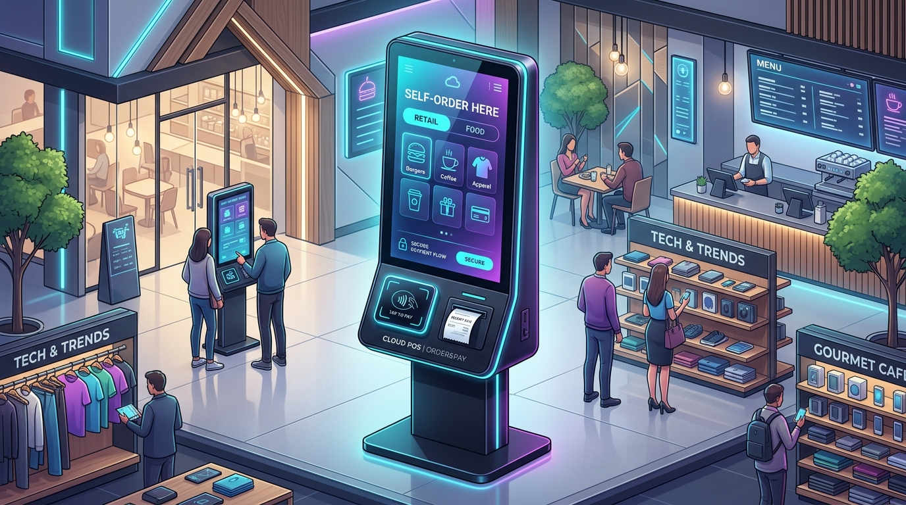

Are you designing a next-generation point-of-sale (POS) platform, building self-checkout interactive kiosks for quick-service restaurants (QSR) and enterprise retail chains, or launching a multi-tenant white-label POS SaaS in 2026?
Modern retail and hospitality environments demand sub-second checkout speeds, zero downtime even during total internet blackouts, automated kitchen dispatching, and AI-driven dynamic upselling. Here is the definitive engineering guide to architecting, securing, and scaling an enterprise-grade, offline-first Cloud POS and Self-Ordering Kiosk platform.

The Shift from Legacy Cash Registers to Autonomous Edge-Cloud POS
Traditional on-premise point-of-sale systems—plagued by monolithic local server racks, fragile Windows-based serial port drivers, and painful manual nightly reconciliations—are rapidly becoming obsolete. Simultaneously, first-generation web-based cloud POS tools revealed a critical vulnerability: when the restaurant or store internet connection drops, the entire business halts.
In 2026, market leaders are adopting a hybrid Edge-Cloud Architecture:
- Interactive Self-Ordering Kiosks: Large format touchscreens running hardware-accelerated interfaces with real-time conversational AI upsell assistants.
- Offline-First Edge Nodes: Embedded SQLite datastores and Conflict-Free Replicated Data Types (CRDTs) that enable cashier terminals and self-service kiosks to transact smoothly during network failures.
- Event-Driven Cloud Backplane: Asynchronous WebSocket/gRPC streaming that propagates transactional state, unified inventory reservations, and kitchen order status across hundreds of franchise locations simultaneously.
Key Business Takeaway: Deploying modern self-ordering kiosks increases average order value (AOV) by 18% to 27% through contextual AI upselling, reduces customer queue times by 60%, and eliminates order entry errors between the counter and the kitchen display system (KDS).
Technical Architecture of an Enterprise Cloud POS & Kiosk Platform
Building a resilient, high-volume POS ecosystem requires separating the hardware interface layer, local persistence engine, and centralized cloud orchestration into distinct decoupled tiers.
graph TD
subgraph Store Edge Network
A[Self-Service Touch Kiosk / Cashier POS] -->|Local IPC / SQLite| B[Edge Sync Daemon]
A -->|WebHID / WebUSB| C[Hardware Peripherals: EMV Terminal, Scanner, Cash Drawer]
A -->|mDNS / UDP Multicast| D[Kitchen Display System - KDS]
B -->|Encrypted WebSocket / gRPC| E[Edge-to-Cloud Sync Engine]
end
subgraph Multi-Tenant Cloud Backplane
E --> F[API Gateway & Rate Limiter]
F --> G[Order & Payment Orchestration Service]
F --> H[Real-Time Inventory & Menu Engine]
F --> I[AI Recommendation & Upsell Agent]
G --> J[Transactional DB: PostgreSQL / TimescaleDB]
H --> K[Distributed Redis Cluster]
G --> L[Payment Processor Bridge: Stripe Terminal / Adyen]
end1. Offline-First Resilience with CRDTs & Embedded SQLite
In high-throughput environments, a point-of-sale client cannot rely on a synchronous HTTP roundtrip to validate a cart, apply a coupon, or log a cash sale.
- Local Storage: Terminals run an embedded relational store (such as SQLite via WebAssembly/OPFS in the browser or SQLite/libSQL in native Electron/React Native desktop clients).
- State Synchronization: Changes are recorded as immutable operation logs using state-based CRDTs (Conflict-Free Replicated Data Types). When network connectivity resumes, the local Edge Sync Daemon streams queued transactions to the cloud cluster without transaction locking.
- Menu Versioning: Product catalogs, pricing modifiers, and tax schemas are cached locally with immutable cryptographic hash signatures (
ETag), ensuring instant rendering and zero UI latency.
2. Universal Hardware Abstraction (WebHID, WebUSB, ESC/POS)
A major bottleneck in legacy POS software was brittle device-specific COM-port drivers. Modern web and hybrid desktop runtimes leverage unified hardware abstraction APIs:
- Thermal Printers: Native raw byte compilation for ESC/POS, StarPRNT, and TSPL protocols dispatched directly over TCP/IP, Bluetooth Low Energy (BLE), or WebUSB.
- EMV Payment Terminals: Semi-integrated payment architecture via WebSocket local daemon or cloud-switched protocols (e.g., Stripe Terminal SDK, Adyen Terminal API, PAX POSLink), ensuring sensitive PAN (Primary Account Number) card data never touches the POS application layer.
- Barcode & RFID Scanners: Hardware keyboard emulation or direct serial stream listening via the Web Serial API for sub-10ms item lookups.
3. Real-Time Smart Kitchen Display System (KDS) & Multi-Station Routing
Orders placed at self-ordering kiosks, online mobile ordering portals, or cashier desks must instantly route to specific prep stations (e.g., Grill, Fryer, Assembly, Bar):
- Local Area Multicast: Using local network WebSockets and mDNS service discovery, kiosks can push order tickets directly to the local KDS display screens even if external WAN connectivity drops.
- Dynamic Prep Pacing: Machine learning models estimate cooking durations based on active order density, automatically staggering ticket release so all components of a multi-item order finish simultaneously.
4. Conversational & Contextual AI Upselling
Unlike static upsell banners that frustrate users, AI-powered kiosks leverage real-time behavioral embeddings:
- Context-Aware Recommendations: Evaluates time of day, weather, cart combination, and past popularity to propose high-margin add-ons (e.g., recommending cold brews on hot mornings or pairing artisanal sauces with specific entrees).
- Natural Voice Ordering: Microphones on the kiosk utilize on-device Whisper models to transcribe spoken customer orders, accommodating accents and conversational order modifiers (e.g., *"give me a double burger with no pickles and extra spicy aioli"*).
Architecture Comparison: POS Paradigms
| Technical Dimension | Legacy On-Premise POS | First-Gen Cloud POS (SaaS 1.0) | Modern Edge-Cloud POS (Anonsoft) |
|---|---|---|---|
| System Architecture | Local Windows server + serial DB | Centralized single-page web app | Distributed Edge-Cloud with CRDT sync |
| Internet Dependency | Zero cloud capabilities | Complete outage during disconnection | 100% Offline-capable with auto-sync |
| Hardware Compatibility | Proprietary locked hardware | Web browsers only (limited peripherals) | Universal WebHID, WebUSB, TCP/IP, BLE |
| Self-Service Kiosk UI | Clunky low-res custom firmware | Basic web iframe | GPU-accelerated touch & voice interface |
| Menu & Price Updates | Manual file copy / overnight reboot | Immediate (requires internet) | Instant delta streaming with edge caching |
| Payment Security | High PCI scope (local card handling) | Redirect / external gateway | Zero PCI Scope (P2PE Semi-Integrated) |
| Multi-Location Analytics | Fragmented CSV exports | Central dashboard with polling | Real-time event streaming across 1,000+ nodes |
Database Architecture & Transactional Schema
Below is an optimized schema structure for handling high-volume order lines, nested modifiers, and multi-tenant franchise isolation:
-- Multi-tenant franchise establishment
CREATE TABLE enterprises (
id UUID PRIMARY KEY DEFAULT gen_random_uuid(),
name VARCHAR(255) NOT NULL,
slug VARCHAR(100) UNIQUE NOT NULL,
created_at TIMESTAMPTZ DEFAULT NOW()
);
CREATE TABLE locations (
id UUID PRIMARY KEY DEFAULT gen_random_uuid(),
enterprise_id UUID REFERENCES enterprises(id) ON DELETE CASCADE,
name VARCHAR(255) NOT NULL,
currency VARCHAR(3) DEFAULT 'USD',
tax_rate NUMERIC(6, 4) NOT NULL,
timezone VARCHAR(50) DEFAULT 'UTC',
created_at TIMESTAMPTZ DEFAULT NOW()
);
-- Master Product & Modifier Mapping
CREATE TABLE products (
id UUID PRIMARY KEY DEFAULT gen_random_uuid(),
enterprise_id UUID REFERENCES enterprises(id),
sku VARCHAR(64) NOT NULL,
name VARCHAR(255) NOT NULL,
base_price_cents INTEGER NOT NULL,
category_id UUID,
is_active BOOLEAN DEFAULT TRUE,
image_url TEXT,
UNIQUE(enterprise_id, sku)
);
-- Transactional Order Headers with Offline Sync Tracking
CREATE TABLE orders (
id UUID PRIMARY KEY DEFAULT gen_random_uuid(),
location_id UUID REFERENCES locations(id),
device_id VARCHAR(64) NOT NULL,
order_number VARCHAR(32) NOT NULL,
status VARCHAR(32) NOT NULL, -- PENDING, PREPARING, READY, COMPLETED, VOIDED
source VARCHAR(32) NOT NULL, -- KIOSK, REGISTER, ONLINE, QR_TABLE
subtotal_cents INTEGER NOT NULL,
tax_cents INTEGER NOT NULL,
tip_cents INTEGER DEFAULT 0,
total_cents INTEGER NOT NULL,
client_created_at TIMESTAMPTZ NOT NULL,
synced_at TIMESTAMPTZ DEFAULT NOW(),
crdt_vector_clock JSONB
);
-- Order Items with JSONB nested customizations
CREATE TABLE order_items (
id UUID PRIMARY KEY DEFAULT gen_random_uuid(),
order_id UUID REFERENCES orders(id) ON DELETE CASCADE,
product_id UUID REFERENCES products(id),
quantity INTEGER NOT NULL,
unit_price_cents INTEGER NOT NULL,
total_price_cents INTEGER NOT NULL,
modifiers JSONB DEFAULT '[]'::jsonb, -- [{"name": "Extra Cheese", "price_cents": 150}]
kitchen_notes TEXT
);Security, PCI-DSS Level 1 & Point-to-Point Encryption (P2PE)
Point-of-sale applications process millions in revenue and are prime targets for malicious actors. Achieving security and compliance requires strict isolation:
graph LR
subgraph Customer Kiosk Terminal
A[Touchscreen UI] -->|Direct USB/Ethernet| B[P2PE EMV Card Reader]
end
subgraph Payment Processor Cloud
B -->|Encrypted Payload SRED| C[Payment Gateway: Stripe / Adyen]
end
subgraph POS Cloud Backend
C -->|Secure Token / Webhook| D[POS Transaction Ledger]
end1. Zero PCI Scope via Semi-Integrated Architecture
Under a semi-integrated payment architecture, the POS application never handles, processes, or transmits cleartext cardholder data (PAN) or CVVs:
- The POS sends an initiate transaction command (
amount: $24.50) to the certified EMV payment terminal. - The customer taps or inserts their card. The hardware terminal encrypts the data at the physical head using Secure Read and Exchange of Data (SRED).
- The encrypted token is transmitted directly to the payment gateway processor. The POS software only receives a tokenized transaction confirmation (
transaction_id: "ch_3N..."), completely minimizing PCI-DSS audit overhead.
2. Kiosk Device Lockdown & OS Sandboxing
Publicly accessible self-ordering kiosks must be physically and digitally fortified:
- Kiosk Shell Mode: Linux (Ubuntu Core / Yocto) or Windows Kiosk Mode with strict disabling of key combinations (
Ctrl+Alt+Del,Alt+F4), USB peripheral whitelist enforcement, and read-only root filesystems with overlayfs. - Ephemeral Session Teardown: After an order completes or an idle timer expires (typically 45 seconds), all transient customer session state, loyalty identifiers, and cached inputs are purged from memory.
Frequently Asked Questions (FAQs)
1. What is the difference between cloud POS and traditional POS?
Traditional POS software runs on local on-premise servers and requires manual software patches, dedicated hardware, and expensive on-site maintenance. Cloud POS operates on modern cloud infrastructure with browser or mobile client interfaces, offering automated real-time multi-location reporting, remote menu updates, and seamless third-party API integrations.
2. How does an offline-first POS handle payments when internet is disconnected?
An offline-first POS processes cash sales, gift cards, and queued offline card transactions (known as Store & Forward) locally using embedded SQLite databases and cryptographic local queuing. Once the internet connection is restored, transactions sync automatically with the cloud ledger and payment gateway.
3. How much does it cost to build a custom white-label cloud POS or kiosk platform?
A custom, enterprise-ready white-label cloud POS platform with self-ordering kiosk support typically costs between $25,000 and $75,000 depending on features like hardware peripheral support, KDS integration, and multi-tenant franchise dashboards. Anonsoft delivers custom POS prototypes with zero upfront cost under our working prototype model.
4. What hardware peripherals are compatible with modern web-based POS platforms?
Modern web-based POS platforms integrate directly with ESC/POS thermal receipt printers (Epson, Star Micronics), barcode scanners (Honeywell, Zebra), automated cash drawers, customer-facing displays, and EMV chip card readers (Stripe BBPOS, PAX, Verifone) via WebUSB, WebSerial, and local TCP/IP sockets.
5. Can Anonsoft build custom POS and self-ordering kiosk software for my business?
Yes. Anonsoft specializes in developing custom, HIPAA-compliant, PCI-compliant, and high-performance SaaS solutions. We build working software prototypes before asking for any financial commitment. Book a strategy call or explore our restaurant POS platform to get started.
Build Your Next-Gen POS Platform with Anonsoft
Whether you are an established franchise chain seeking to cut licensing fees from legacy POS vendors or a SaaS entrepreneur building a vertical POS software for retail, salons, or QSRs, Anonsoft is your engineering partner.
- Zero Upfront Payment: We engineer a functional, interactive prototype of your custom POS or kiosk system first. You only pay after you review and approve the working build.
- Full Source Code Ownership: 100% proprietary code with zero vendor lock-in.
- End-to-End Delivery: From custom kiosk UI/UX design to edge offline sync, payment gateway certifications, and kitchen display systems.
Ready to bring your POS software vision to life? Book a Free Technical Strategy Call with our engineering leadership today.